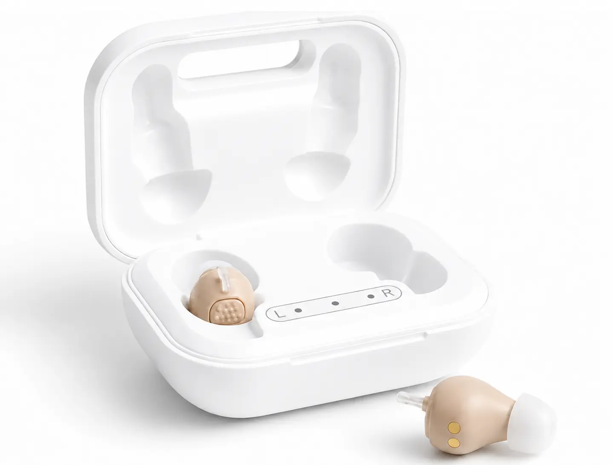
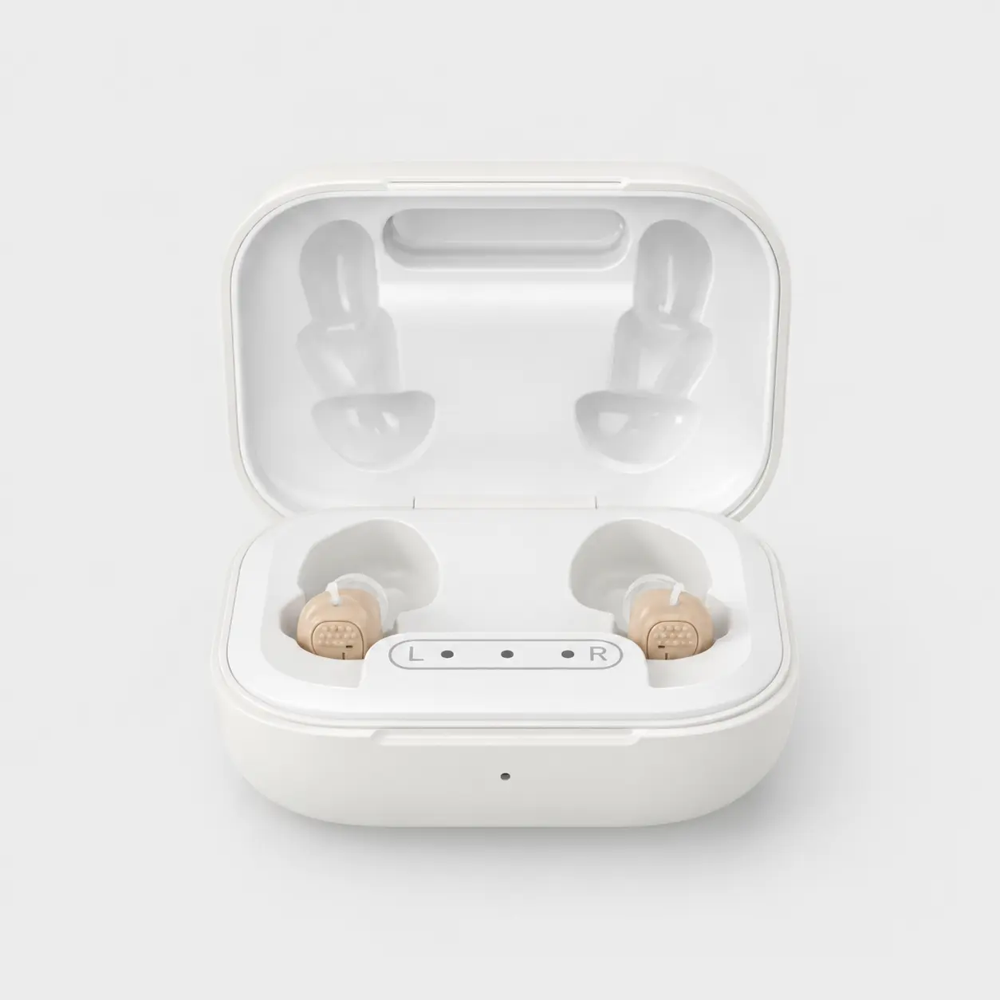

Doorbraak in Nederland: dit revolutionaire gehoorapparaat verandert alles voor mensen die jarenlang niets durfden te doen aan hun gehoor
Mijn naam is Dr. Janneke de Boer. Ik ben een gepensioneerde audicien met meer dan 30 jaar ervaring.
En voor het eerst in al die jaren zie ik iets dat echt een verschil maakt voor gewone Nederlanders — zonder wachtlijst, zonder duizenden euro's en zonder ingewikkelde afspraken.
Elke week spreek ik mensen van in de 60, 70 en 80 die hetzelfde verhaal vertellen.
Ze missen wat hun kleinkinderen zeggen. Ze knikken mee in gesprekken terwijl ze de helft niet verstaan. Ze blijven thuis omdat restaurants en familiefeestjes te vermoeiend zijn geworden.
Niet omdat er geen oplossing bestaat. Maar omdat de oude manier van hoortoestellen kopen simpelweg niet meer past bij hoe mensen vandaag leven.
Dat is aan het veranderen.
Wat er nu anders is in Nederland
Er is een nieuwe generatie hoortoestellen gearriveerd — compact, oplaadbaar, en ontworpen voor mensen die gewoon weer normaal willen horen.
Geen grote beige apparaten achter het oor. Geen batterijtjes die u elke paar dagen moet vervangen. Geen maanden wachten op een afspraak.
Dit is geen goedkope versterker van een webshop. Het zijn echte digitale hoortoestellen met dezelfde kerntechnologie als dure modellen: een chip die spraak versterkt en achtergrondgeluid dempt.
CE-gecertificeerd als medisch hulpmiddel. Dezelfde standaard als hoortoestellen uit de winkelstraat.
En het komt rechtstreeks vanuit een Nederlands magazijn — zonder tussenpersonen, zonder commissies, zonder tv-reclame die uiteindelijk op uw factuur belandt.
Het apparaat waar iedereen het over heeft: HearDirect™

Toen ik voor het eerst over HearDirect™ hoorde, was ik sceptisch. Een revolutionair gehoorapparaat voor €149? Dat klonk te mooi om waar te zijn.
Dus ik deed wat ik altijd doe. Ik testte het. Bij echte mensen. Gedurende weken. Naast alles wat ik in 30 jaar heb gezien.
Wat me verraste was niet alleen de technologie — Knowles-receivers, digitale geluidsverwerking, oplaadbare case — maar vooral hoe snel mensen resultaat merkten.
Na een paar dagen hoorden ze weer wat hun partner zei vanaf de andere kamer. Ze volgden gesprekken aan de keukentafel zonder te knikken en te hopen. Ze zetten de tv niet meer op het maximum.
Opgericht door David Taylor. Zijn vader was in de zeventig en kon het zich niet veroorloven om jaren te wachten of duizenden euro's te betalen.
Magazijn in Deventer. Direct van fabrikant naar uw deur. Geen winkel, geen commissie, geen onnodige marges.
90 dagen thuis proberen. Volledige terugbetaling als het niet bevalt. 1 jaar garantie. Oplaadbaar — geen batterijen meer.

Dit is waarom ik dit een echte doorbraak noem voor Nederland.
Voor het eerst kunnen mensen met een normaal pensioen toegang krijgen tot hoortoesteltechnologie die jarenlang alleen beschikbaar was voor wie duizenden euro's kon betalen — of maanden kon wachten.
En het mooiste? U hoeft uw huis niet uit. Het wordt thuisbezorgd. U probeert het 90 dagen. Werkt het niet? Dan stuurt u het terug.
Wat mensen ervaren na een paar dagen
"Mijn kleindochter fluisterde iets en ik hoorde het meteen. Ik moest even huilen."— Els, 76 jaar
"Ik durfde weer naar de bridgeclub. Voor het eerst in drie jaar."— Henk, 79 jaar
"Na één week wist ik: dit is geen gimmick. Dit is echt."— Marga, 68 jaar
"Mijn man zei eindelijk weer 'wat?' in plaats van dat ik alles moest herhalen."— Anita, 74 jaar
Waarom dit nu zo snel groeit
Mond-tot-mondreclame werkt. Mensen die HearDirect™ proberen, vertellen het aan buren, aan familie, aan vrienden uit de buurt.
Geen dure tv-spots. Geen audicien die u duurdere modellen probeert te verkopen. Gewoon een product dat doet wat het belooft — en een proefperiode waarin u zelf kunt oordelen.
Na 30 jaar in deze sector zie ik eindelijk iets dat de drempel wegneemt voor mensen die jarenlang niets deden.
Als u twijfelt of dit voor u is: dat snap ik. Ik had hetzelfde.
Maar met 90 dagen om het thuis te testen, is het enige risico dat u niets doet — en nog een jaar mist wat er om u heen gebeurt.
Cijfers van gebruikers
BELANGRIJKE UPDATE
Sinds de publicatie van dit artikel heeft HearDirect™ enorm veel belangstelling gekregen in Nederland.
Het bedrijf biedt lezers van dit artikel, voor een beperkte tijd, een exclusieve 50% korting aan.
Elke bestelling bevat een proefperiode van 90 dagen zonder risico, 1 jaar garantie en gratis verzekerde verzending.
Ervaart u binnen 90 dagen geen duidelijker gehoor? Dan kunt u het product retourneren en krijgt u uw geld terug.
Korting Toepassen & Beschikbaarheid Bekijken >>
Reacties
Mijn dochter stuurde me dit artikel. Ik was sceptisch, maar na een week met HearDirect™ kan ik eindelijk weer meedoen aan familie-avondeten zonder constant te vragen "wat zei je?"
Revolutionair is het goede woord. Klein, oplaadbaar, en ik hoor eindelijk weer de vogels in de tuin. Waarom heeft niemand me dit eerder verteld?
Voor mijn vader besteld. Hij was eerst tegenstribbelend — nu draagt hij ze elke ochtend. De 90-dagen proef gaf ons het vertrouwen om het te proberen.
Eindelijk iets dat past bij hoe we nu leven. Geen afspraken, geen wachtlijst. Gewoon thuis proberen. Dat is pas een doorbraak.
TV-volume van 42 naar 12. Mijn vrouw is dolgelukkig. En ik ook, eerlijk gezegd.
Dr. de Boer legt het goed uit. Ik was bang dat goedkoop = slecht. Maar dit is echt een ander verhaal. CE-gecertificeerd en 90 dagen proberen — dat gaf mij vertrouwen.